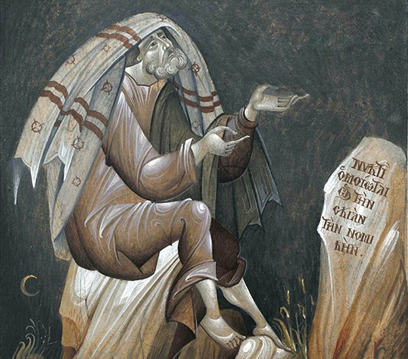

The Mystery of the Apostle Paul. Israel and the Church

At one of my art midrashim on Israel and the Church I asked the audience: do you consider Paul the least of the apostles? The answer was a deep silence. And it was clearly not a sign of agreement. When I pointed out that Paul calls himself that in the First Letter to the Corinthians (15:9), the audience still refused to accept this description. "Don't you trust the apostle's words?" I insisted. Then the audience agreed as one that what Paul said was nothing other than an expression of his great modesty.
I think Paul did not suffer from excessive shyness. And of course there is no question of modesty here: more than once we hear from the apostle phrases like "I laboured more abundantly than they all…" and "the very chiefest apostles…", as well as his repeated and rather wordy proofs that he is in no way behind the chiefest apostles.
What, then, made Paul speak of himself as the least of the apostles? I think he said these words with bitter irony and pain.
The fact is that among the disciples of Yeshua there were persistent rumours that Shaul (also called Paul) taught the Jews not to circumcise their children and to forsake the Law of Moshe (Acts 21:21). And such people, according to Messiah Yeshua, shall be called the least: "Whosoever therefore shall break one of these least commandments, and shall teach men so, he shall be called the least in the kingdom of heaven: but whosoever shall do and teach them, the same shall be called great in the kingdom of heaven" (Matt. 5:19).
On the advice of the apostle Yaakov (James), Paul did everything to show that what was said about him was not true (Acts 21:24, 26). Nevertheless, unscrupulous people among the disciples persistently spread these rumours, which led many communities of Messianic Jews in the Middle East to reject the apostle and his letters.
This was pain and suffering for Paul. His own brothers, disciples of Yeshua, did not accept him. That is why he pressed on to Jerusalem, despite many prophecies and warnings not to go there. It was very important for him to be reconciled with his brothers in the faith and to prove to them that these rumours about him were lies.
Why was it so important to him? After all, he once said of himself that it was a very small thing to him how other people judged him, and that he did not even judge himself (1 Cor. 4:3).
What was very important to him was the mystery of God's household plan, hidden from former generations and revealed to him: that Jews and Greeks, each keeping their own calling (1 Cor. 7:18–20), together make up the one body of the Messiah. And his rejection as an apostle by many Jewish disciples of the Messiah prevented the Messianic communities from receiving this great revelation. Though most of the Greeks also received his revelations one-sidedly, not seeing or not giving weight to Paul's exhortations about the importance of the Jewish part of the body of the Messiah, which led to the complete rejection of the Jewish disciples of the Messiah by the believers from the nations.
So the mystery hidden from former generations remains, unfortunately, a mystery to this day…
See the video for more about Paul's mystery and his sufferings for it, and also about the charge against the church in Ephesus in the Book of Revelation, that it had left its first love.
About "first love" (Rev. 2:4), read also HERE.
Author: Ephraim Kalish
 The Creativity of Faith. A Vineyard of One's Own in Israel
The Creativity of Faith. A Vineyard of One's Own in Israel Interview with Jacob Damkani about the Film "A New Spirit". On Messianic Jews
Interview with Jacob Damkani about the Film "A New Spirit". On Messianic Jews